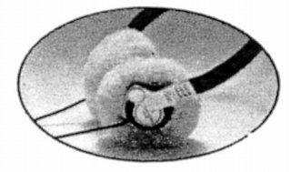
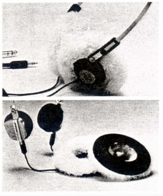
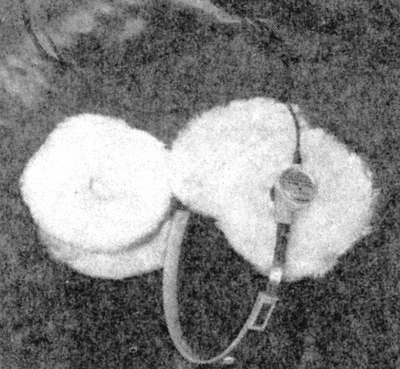

ESKIMO(型番HP-10)

■価格 1,000円
■ウインター・イヤパッド
■本体直径35�o〜40�oの製品に取り付け可
■発売 1981年頃
■販売終了
■備考
Pointシリーズ第１世代（ATH-0.1、0.3、0.5）
当時に発売されていたアクセサリー。
画像はATH-0.5（point5）に装着した様子。
同様のものにビクターのHP-M11用のオプション
SM-11(1,000円)がある。販売時期はほぼ同時期。
また型番は不明だがアイワにも同様の製品があったらしい。
なお、ソニーでもウーキングステレオの付属品で似たものがあったらしい。

(上がESKIMO 下がSM-11）
なおATH-0.1に付属して販売されたものもある。
その場合のセット価格は4,600円
（ATH-0.1の標準価格は3,600円）
またこの当時、結構ヒットしたらしく、社外品でパットだけ販売する所もあった。

日本ダンボン�鰍ﾌ製品。